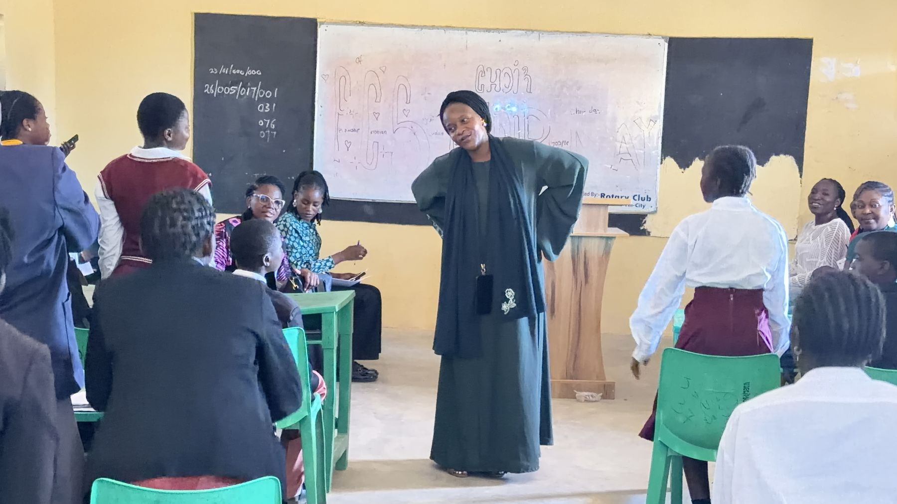
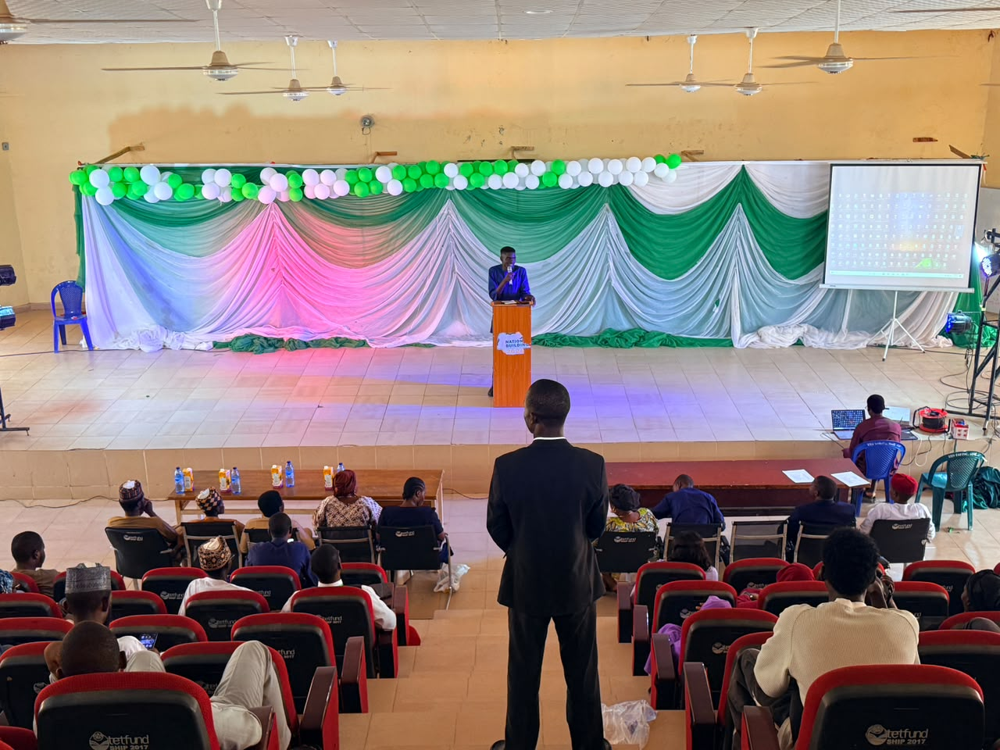

What we do
Two programmes, two ends of one pipeline
We work the years before university, and the years during it. A young person can meet us at thirteen and again at twenty.
Secondary schools · ages 13 to 18
The Young Leaders Challenge
Our flagship under this wing is the Students’ Parliament — a standing body of students who run it themselves.
- They elect their own officers. Twelve offices, decided by secret ballot of every member, with three reserved for the youngest students so they are not spectators.
- They write their own rules. The House adopts standing orders it has argued over, and keeps minutes any student in the school may read.
- They set their own agenda. Every motion debated is one a student wrote. Nothing is handed down.
- It continues. Four standing committees carry work between sittings, and the House meets again every term.


Tertiary institutions · undergraduates
Nation Building Conferences
We hold these on campuses across Nigeria. Undergraduates are not lectured about civic responsibility; they are challenged on it, in the room, and asked what they intend to do.
- On their ground. We come to the institution rather than asking students to travel.
- Argument, not address. The format puts students on their feet and in disagreement with each other.
- Three in the past twelve months, and the platform through which we reach students already at university.
The four standing committees
Each committee has a chair answerable to the House, a secretary drawn from its junior members, and one concrete task to report on at the next sitting.
Welfare and Peer Support
New students, bullying, a classmate who has stopped coming.
Academics and Study Support
Peer tutoring, past questions, study groups, reading.
Environment, Health and Sanitation
Water points, toilets, waste, and the state of the grounds.
Sports, Culture and Events
Inter-school fixtures, debate, and a cultural day.
A parliament is a machine for disagreeing without destroying something. Rules for who speaks. A way to lose a vote and still stay in the room. A record anybody can check.
Ten Houses by 2028
The design is finished and written to be handed over — standing orders, facilitator guides, ballot procedure and a members’ handbook. Replication is now a question of people and transport, not of invention.